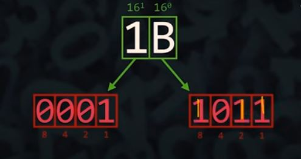

Sistema Hexadecimal
O sistema hexadecimal é um sistema de numeração de base 16. Utiliza dezesseis símbolos: (0-9) depois (A-F)
Decimal
0
1
2
3
4
5
6
7
8
9
10
11
12
13
14
15
Hexadecimal
0
1
2
3
4
5
6
7
8
9
A
B
C
D
E
F
Hexadecimal para Decimal
Para converter um número hexadecimal para decimal, você deve multiplicar cada dígito do número hexadecimal pelo valor de 16 elevado à posição do dígito, contando da direita para a esquerda, começando em 0. Em seguida, você soma todos esses valores.
Número Hexadecimal 2FA
Identifique as potências de 16 para cada posição:
2 x 162 + F(15) x 161 + A(10) x 160
512 + 240 + 10 = 762
Portanto, o número Hexadecimal 2FA em decimal é 762.
Decimal para Hexadecimal
Converter um número decimal para hexadecimal envolve dividir o número decimal repetidamente por 16, registrando o resto em cada divisão. Esses restos são então usados para formar o número hexadecimal.
Para converter o número decimal 755 para hexadecimal:
755 ÷ 16 = 47 quociente, 3 resto
47 ÷ 16 = 2 (quociente) e 15(F) (resto)
2 ÷ 16 = 0 (quociente) e 2 (resto).
Agora, escreva os restos na ordem inversa: Número Hexadecimal: 2F3.
Converter Hexadecimal para Binario
Entenda a Correspondência: Cada dígito do sistema hexadecimal pode ser representado por exatamente 4 bits no sistema binário. Isso ocorre porque o hexadecimal é uma base 16 e o binário é uma base 2. A relação entre essas bases é que 16 = 24, então cada dígito hexadecimal pode ser representado por 4 dígitos binários.
Encontre na soma das bases o valor do digito octal, e nessas bases insira o digito 1
No exeplo acima o 'B' foi transformado em 11 e em seguida foi somado as bases do bloco de 4 bits encontrando o valor 11 na soma entre a base (24 + 22 + 21) 8 + 2 + 1. Essas bases foram preenchidas com o valor 1